num_data_points <- 5
mean_data <- 3.0
sd_data <- 1.0
new_data <- rnorm(num_data_points, mean = mean_data, sd = sd_data)
hist(new_data)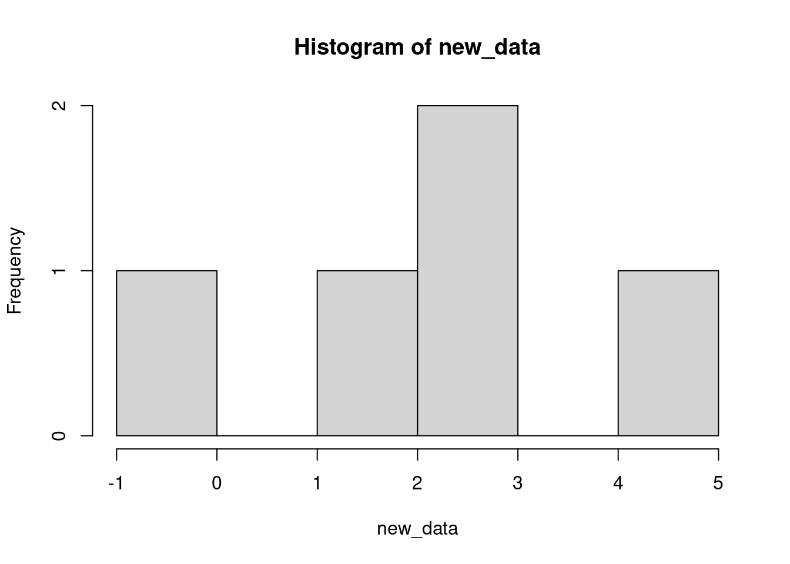
Here we start where we left off with the likelihood chapter. Imagine the following dataset with five data points drawn from a normal distribution.
num_data_points <- 5
mean_data <- 3.0
sd_data <- 1.0
new_data <- rnorm(num_data_points, mean = mean_data, sd = sd_data)
hist(new_data)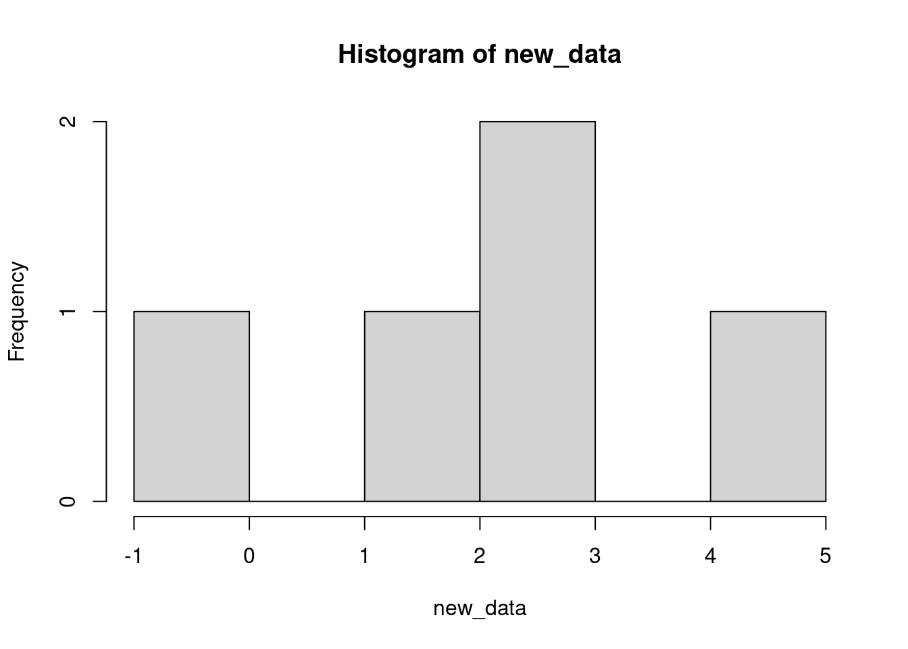
We can calculate the likelihood for a set of different means using the manual likelihood estimation that we did in the likelihood lecture
#DATA MODEL
delta_x <- 0.1
x <- seq(-10,10, delta_x)
negative_log_likelihood <- rep(NA,length(x))
for(i in 1:length(x)){
negative_log_likelihood[i] <- -sum(dnorm(new_data, mean = x[i], sd = 1, log = TRUE))
}
plot(x, negative_log_likelihood)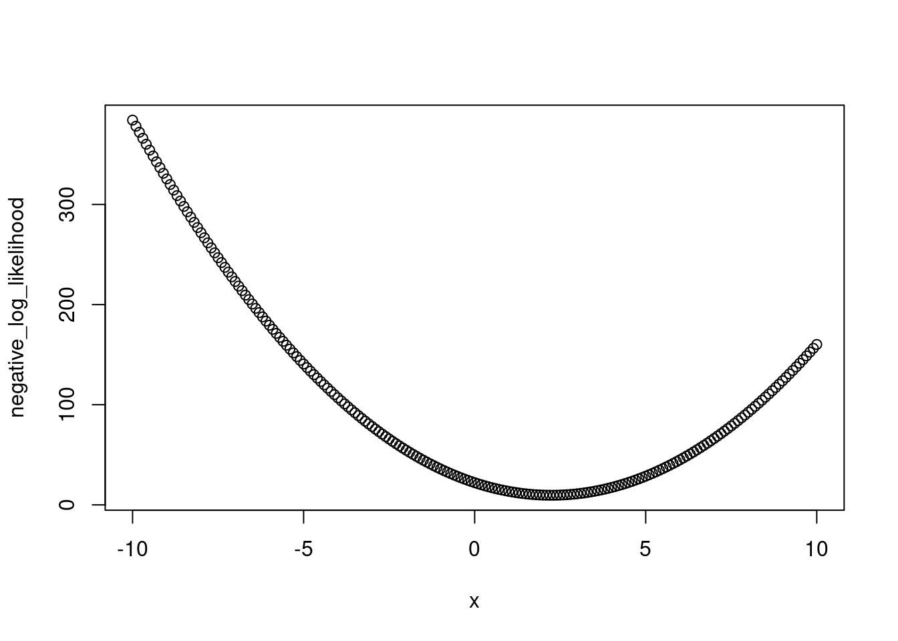
The negative log likelihood is useful for using finding the maximum likelihood values with a optimizing function. However, here we want to convert back to density
density_likelihood <- exp(-negative_log_likelihood)
plot(x, density_likelihood, type = "l")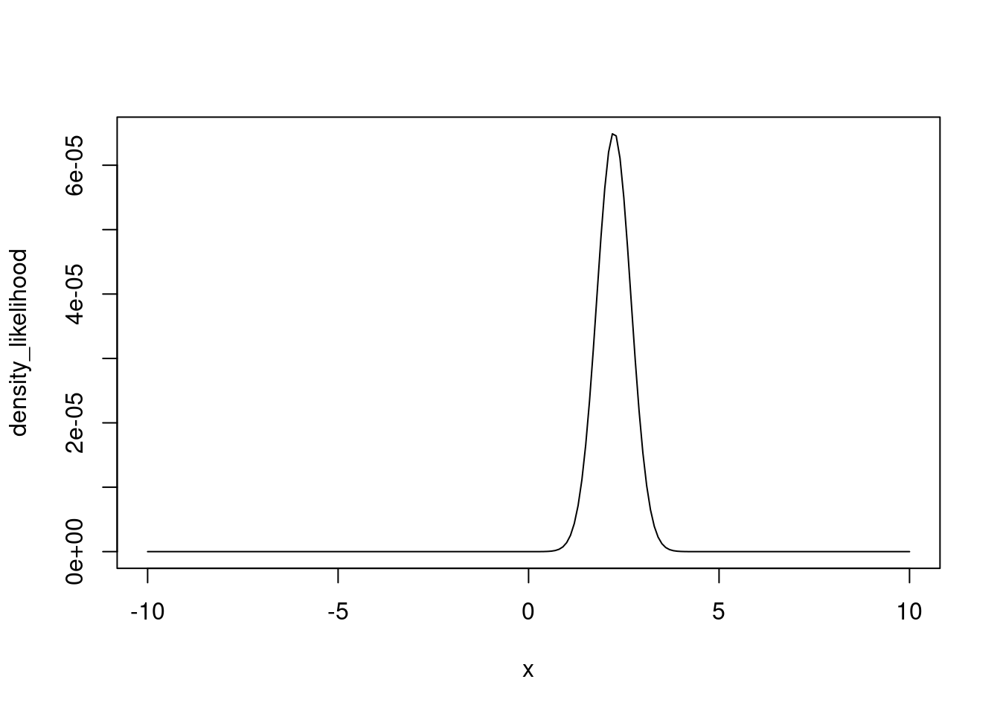
The y-axis are tiny numbers because we multiplied probability densities together. This is OK for our illustrative purposes. To help visualize we can rescale so that area under the curve is 1. The area is approximated where the density is the height and the width is the distance between points on the x axis (delta_x) that we evaluated (height x width is the area of a bar under the curve). If we sum the bars together, we get the area under the curve (a value way less than 1). Dividing the likelihood by the area rescales the densities so the area under the curve is 1. Rescaling the likelihood is not a formal part of the the analysis - just used here for visualizing.
likelihood_area_under_curve <- sum(density_likelihood * delta_x) #Width * Height
density_likelihood_rescaled <- density_likelihood/likelihood_area_under_curveThe rescaled likelihood looks like this
d <- tibble(x = x,
likelihood = density_likelihood_rescaled)
ggplot(d, aes(x = x, y = likelihood)) +
geom_line()Remember that this curve is the P(data | mean = x). We want the P(mean = x | data).
Following Bayes rule we can multiply the likelihood x the prior
Our prior is the following normal distribution
mean_prior <- 0
sd_prior <- 1.0
#Priors
density_prior <- dnorm(x, mean = mean_prior, sd = sd_prior)
d <- tibble(x = x,
density_prior = density_prior)
ggplot(d, aes(x = x, y = density_prior)) +
geom_line()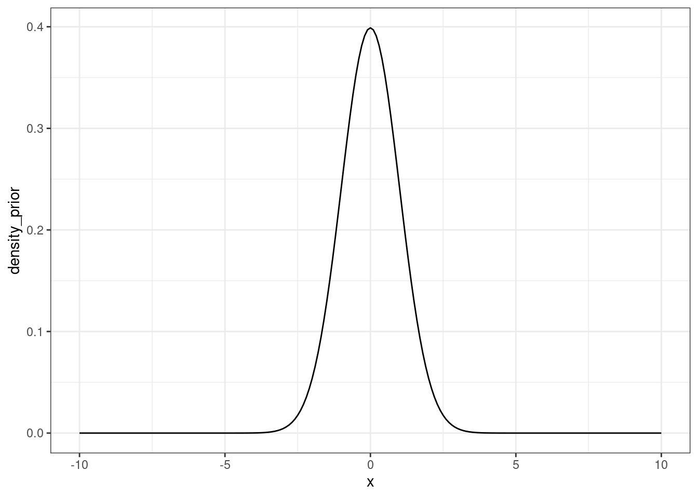
Putting the rescaled likelihood on the same plot as the prior results in
tibble(x = x,
prior = density_prior,
likelihood_rescaled = density_likelihood_rescaled) %>%
pivot_longer(cols = -x, names_to = "distribution", values_to = "density") %>%
mutate(distribution = factor(distribution)) %>%
ggplot(aes(x = x, y = density, color = distribution)) +
geom_line() Multiplying the prior x the likelihood (not rescaled)
prior_times_likelihood <- density_prior * density_likelihood
d <- tibble(x = x,
prior_times_likelihood = prior_times_likelihood)
ggplot(d, aes(x = x, y = prior_times_likelihood)) +
geom_line()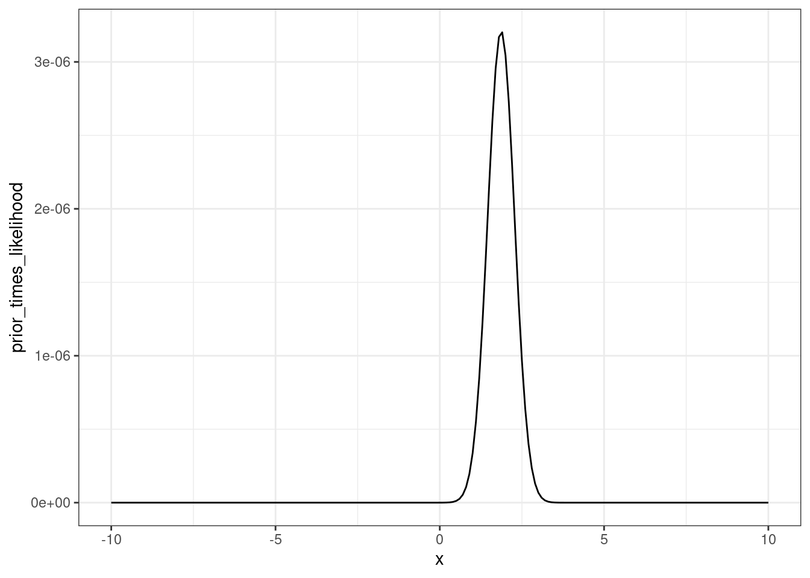
But from Bayes rule we can rescale the prior x likelihood by the area under the curve to convert to a probability density function
area_under_curve <- sum(prior_times_likelihood * delta_x) #sum(Width * Height) = total probability of the data given all possible values of the parameter
normalized_posterior <- prior_times_likelihood / area_under_curve
paste0("the probablity of the data is (i.e., area under likelihood x prior curve): ", area_under_curve)[1] "the probablity of the data is (i.e., area under likelihood x prior curve): 0.000143604084104952"Now we can visualize the rescaled likelihood (remember that the un-scaled likelihood was actually used in the calculations), the prior, and the normalized posterior.
See how the how the posterior is a blend of the prior and the likelihood
tibble(x = x,
prior = density_prior,
likelihood = density_likelihood_rescaled,
normalized_posterior = normalized_posterior) %>%
pivot_longer(cols = -x, names_to = "distribution", values_to = "density") %>%
mutate(distribution = factor(distribution)) %>%
ggplot(aes(x = x, y = density, color = distribution)) +
geom_line()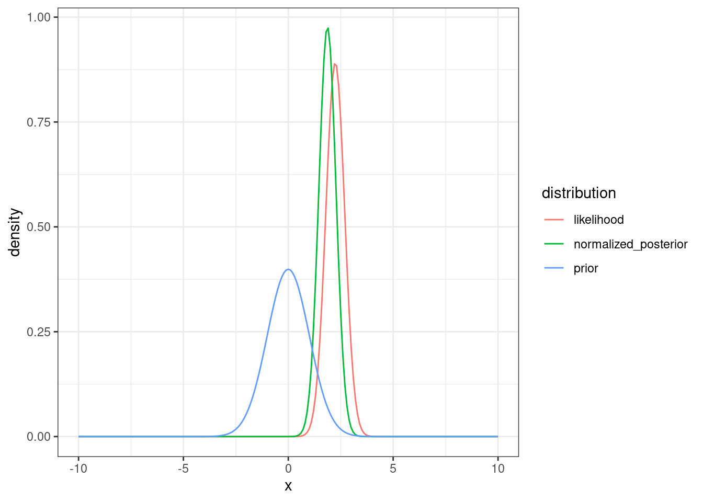
Here is a function that will allow you to explore how the posterior is sensitive to the likelihood and the prior
explore_senstivity <- function(num_data_points, mean_data, sd_data, mean_prior, sd_prior, title){
new_data <- rnorm(num_data_points, mean_data, sd_data)
delta_x <- 0.1
x <- seq(-5,5, delta_x)
negative_log_likelihood <- rep(NA,length(x))
#DATA MODEL
for(i in 1:length(x)){
#Process model is that mean = x
negative_log_likelihood[i] <- -sum(dnorm(new_data, mean = x[i], sd = 1, log = TRUE))
}
density_likelihood <- exp(-negative_log_likelihood)
likelihood_area_under_curve <- sum(density_likelihood * delta_x) #Width * Height
density_likelihood_rescaled <- density_likelihood/likelihood_area_under_curve
#Prior
density_prior <- dnorm(x, mean = mean_prior, sd = sd_prior)
#Prior x Likelihood
prior_times_likelihood <- density_prior * density_likelihood
area_under_curve <- sum(prior_times_likelihood * delta_x) #Width * Height
normalized_posterior <- prior_times_likelihood / area_under_curve
p <- tibble(x = x,
prior = density_prior,
likelihood = density_likelihood_rescaled,
normalized_posterior = normalized_posterior) %>%
pivot_longer(cols = -x, names_to = "distribution", values_to = "density") %>%
mutate(distribution = factor(distribution)) %>%
ggplot(aes(x = x, y = density, color = distribution)) +
geom_line() +
labs(title = title)
return(p)
}Now you can explore how the posterior is sensitive to 1) prior sd (i.e., confidence in the prior) 2) the number of data points used in the likelihood (how does increasing the number of data points influence the posterior) the prior mean 3) the mean of the data used in the likelihood (how different is it than the prior?)
#Baseline
p1 <- explore_senstivity(num_data_points = 5,
mean_data = 3,
sd_data = 2,
mean_prior = 0,
sd_prior = 1.0,
title = "Baseline")
#Increase confidence in prior
p2 <- explore_senstivity(num_data_points = 5,
mean_data = 3,
sd_data = 2,
mean_prior = 0,
sd_prior = 0.1,
title = "Increase confidence in prior")
#Increase number of data points
p3 <- explore_senstivity(num_data_points = 50,
mean_data = 3,
sd_data = 2,
mean_prior = 0,
sd_prior = 1.0,
title = "Increase data")
#Make likelihood mean closer to prior
p4 <- explore_senstivity(num_data_points = 5,
mean_data = 0,
sd_data = 2,
mean_prior = 0,
sd_prior = 1.0,
title = "Make likelihood mean closer to prior")
(p1 / p2) | (p3 / p4) 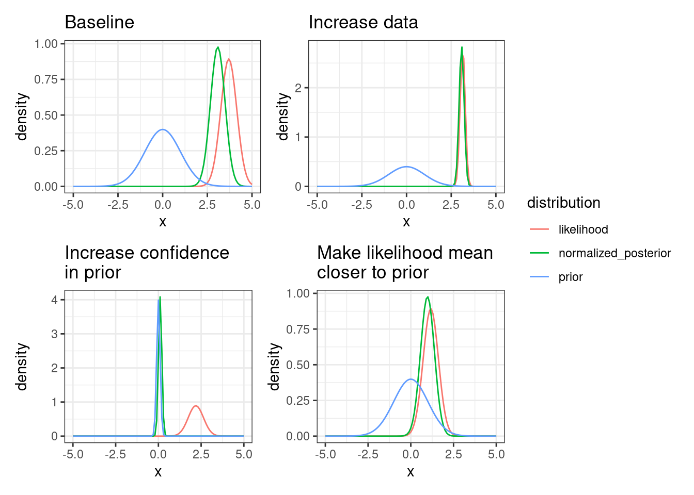
Just like we extended the likelihood analysis to the non-linear example, we can do the same for the Bayesian analysis.
First create a data set using the Michaelis-Menten function from the likelihood exercise. Here, instead of fitting both parameters, we only fit one parameter (the maximum or saturating value) called par1. In the chunk below we set the number of data points, the true value for par1, and the standard deviation of the data.
set.seed(100)
num_data_points <- 10
par1_true <- 3
sd_data <- 0.5
x <- runif(num_data_points, 0, 10)
par_true <- c(par1_true, 0.5)
y_true <- par_true[1] * (x / (x + par_true[2]))
y <- rnorm(length(y_true), mean = y_true, sd = sd_data)
plot(x, y, ylim = c(0, par1_true + 2))Now we can define the prior. We think the prior is normally distributed with a mean and sd defined below
mean_prior <- 1.0
sd_prior <- 0.5Here is the manual calculation of the likelihood and the prior. We combine the results into a data frame for visualization.
delta_par1 <- 0.1
par1 <- seq(-3,10, delta_par1)
negative_log_likelihood <- rep(NA,length(par1))
for(i in 1:length(par1)){
#Process model
pred <- par1[i] * (x / (x + par_true[2]))
#Data model
negative_log_likelihood[i] <- -sum(dnorm(y, mean = pred, sd = sd_data, log = TRUE))
}
density_likelihood <- exp(-negative_log_likelihood)
likelihood_area_under_curve <- sum(density_likelihood * delta_par1) #Width * Height
density_likelihood_rescaled <- density_likelihood/likelihood_area_under_curve
#Priors
density_prior <- dnorm(par1, mean = mean_prior, sd = sd_prior)
prior_times_likelihood <- density_prior * density_likelihood
area_under_curve <- sum(prior_times_likelihood * delta_par1) #Width * Height
normalized_posterior <- prior_times_likelihood / area_under_curve
tibble(par1 = par1,
prior = density_prior,
likelihood = density_likelihood_rescaled,
normalized_posterior = normalized_posterior) %>%
pivot_longer(cols = -par1, names_to = "distribution", values_to = "density") %>%
mutate(distribution = factor(distribution)) %>%
ggplot(aes(x = par1, y = density, color = distribution)) +
geom_line()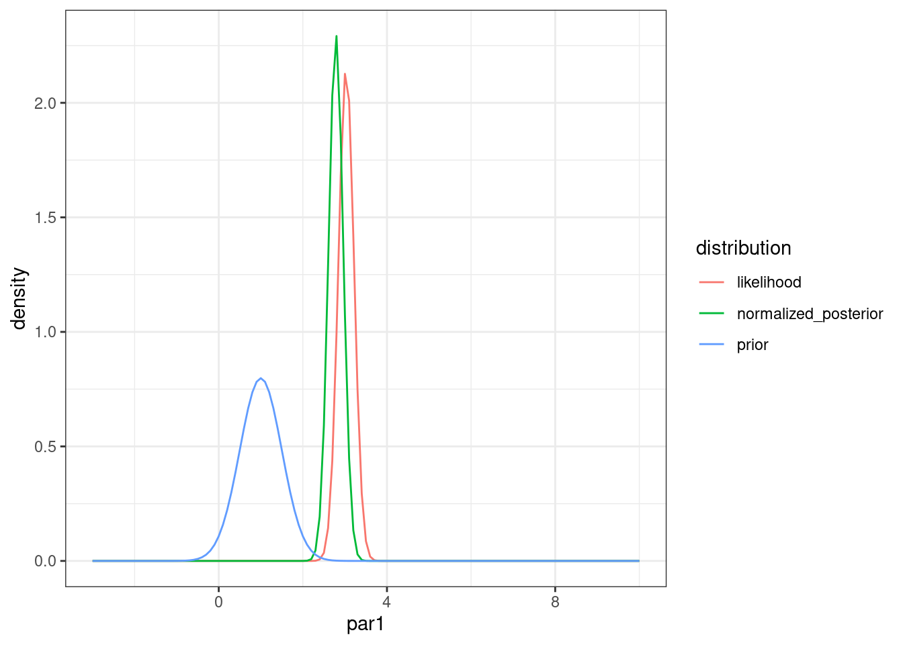
Now we can look at how our the prior and posterior distributions influence the shape of the process model curve (M-M). For illustration, the figure below shows the M-M curve using the most likely value from the prior, most likely value if we just looked at the likelihood, and most likely value from the posterior.
par1_mle <- par1[which.max(density_likelihood)]
par1_post <- par1[which.max(normalized_posterior)]
d <- tibble(x = seq(0,10, 0.1),
prior = mean_prior * (x / (x + par_true[2])),
likelihood = par1_mle * (x / (x + par_true[2])),
posterior = par1_post * (x / (x + par_true[2]))) %>%
pivot_longer(cols = -x, names_to = "distribution", values_to = "prediction") %>%
mutate(distribution = factor(distribution))
ggplot(d, aes(x = x, y = prediction, col = distribution)) +
geom_line() +
labs(y = "M-M model prediction (process model)")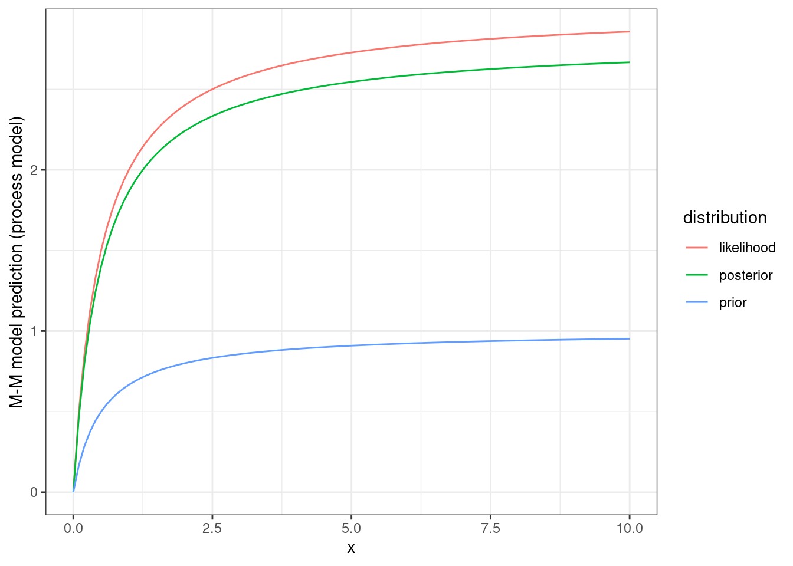
The example above is designed to build an intuition for how a Bayesian analysis works but is not how the parameters in a Bayesian model are estimated in practice. For one thing, if there are multiple parameters being estimated it is very hard to estimate the area under the curve. Second, the area is very very same if there are many data points (so small that the computer cant hold it well)
There are two common methods for estimating posterior distributions that involve numerical computation. Both methods involve randomly sampling from an unknown posterior distribution and saving the samples. The sequence of saved sample for the parameters is called a Markov chain Monte Carlo (MCMC). The distribution of parameter values in the MCMC chain is your posterior distribution.
The first is called Gibbs sampling and is used when you know the probability distribution type for the posterior but not the parameter values of the distribution. For example, if your prior is normally distributed and your likelihood is normally distributed then you know (from math that other have already done for you) that the posterior is normally distributed. Therefore, you can randomly draw from that distribution to build your MCMC chain that generates your posterior distribution. We will not go over this in detail but know that this method will give you an answer quicker but requires you (or the software you are using) to know that your prior and likelihood are conjunct (i.e., someone else has worked out that the posterior always has a certain PDF if the prior and likelihood are of certain PDF - see pages 86-89 and Table A3 in Hobbs and Hooten).
The second is called MCMC MetropolisHastings (MCMC-MH) and is a rejection sampling method. In this case you dont know the form of the posterior. Basically the MCMC-MH is the following
Create vector that has a length equal to the total number of iterations you want to have in your MCMC chain. Set the first value of the vector to your parameter starting point.
randomly choose a new parameter value based on the previous parameter value in the MCMC chain (called a proposal). For example (where i is the current iteration in your MCMC chain): par_proposed <- rnorm(1, mean = par[i - 1], sd = jump), where jump is the standard deviation that governs how far you want the proposed parameter to potentially be from the previous parameter.
use this proposed parameter in your likelihood and prior calculations and multiply the likelihood * prior (i.e., the numerator in Bayes formula). Save this as the proposed probability(prob_proposed)
Take the ratio of the proposed probability to the previous probability (also called the current probability; prob_current). call this prob_proposed
Randomly select a number between 0 and 1. Call this z
If prob_proposed from Step 3 is greater than z from Step 4 then save the proposed parameter for that iteration of MCMC chain. If it is less, then assign the previous parameter value for that iteration of the MCMC chain. As a result of Step 5:
prob_proposed/prob_current > 1. Therefore all improvements will be accepted since z (by definition in Step 4) can never be greater than 1.prob_proposed/prob_current < 1, will be accepted in proportion to how worse they are. For example if prob_proposed/prob_current = 0.9, 90% of the time z will be less the .90 so the worse parameters than are worse by 10% will be accepted 90% of the time. If prob_proposed/prob_current = 0.01 (i.e., the new parameters are much worse), only 1% of the time will z be less then 0.01. Therefore it is possible but not common to save these worse parameters. As a result, the MCMC-MH approach explores the full distribution by spending more time at more likely parameter values. This is different than maximum likelihood optimization methods like optim' that only save parameters that are better than previous (thus finds the peak of the mountain rather than the shape of the mountain). The MCMC-HM approach requires taking a lot samples so that it spends some time at very unlikely values - a necessity for estimating the tails of a distribution.prob_proposed/prob_current values near 1). If your jump parameter from #1 is too small, you wont be able to explore the tails of the distribution (i.e., you wont get a lot of prob_proposed/prob_current values near 0 that have a random chance of being accepted).Note: there is a step that is ignored here that just confuses at this stage. Your proposal distribution in #1 doesnt have to be normal, which is symmetric (i.e., your probability of jumping from a value of X to Y is the same as jumping from Y to X). There is adjustment for non-symmetric proposals that is on page page 71 in Dietze and page 158 in Hobbs and Hooten.
Here is an example of the MCMC-MH method:
(note: the example below should use logged probability densities for numerical reasons but uses the non-logged densities so that the method is more clear. The example in assignment uses logged densities)
Set up data (same as above)
num_data_points <- 10
par1_true <- 3
sd_data <- 0.5
x <- runif(num_data_points, 0, 10)
par_true <- c(par1_true, 0.5)
y_true <- par_true[1] * (x / (x + par_true[2]))
y <- rnorm(length(y_true), mean = y_true, sd = sd_data)
plot(x, y, ylim = c(0, par1_true + 2))Run MCMC-MH
#Initialize chain
num_iter <- 5000
pars <- array(NA, dim = c(num_iter))
pars[1] <- 2
log_prob_current <- -10000000000
prob_current <- exp(log_prob_current)
jump <- 0.1
mean_prior <- 1.0
sd_prior <- 0.5
for(i in 2:num_iter){
#Randomly select new parameter values
proposed_pars <- rnorm(1, pars[i - 1], jump)
#PRIORS: how likely is the proposed value given the prior distribution?
prior <- dnorm(proposed_pars, mean = mean_prior, sd = sd_prior)
#PROCESS MODEL: Use new parameter values in the process model
pred <- proposed_pars * (x / (x + par_true[2]))
#DATA MODEL: how likely is the data given the proposed parameter?
#We are multiplying here
likelihood <- prod(dnorm(y, mean = pred, sd = sd_data))
#Combine the prior and likelihood
#remember that you multiply probabilities which mean you can add log(probability)
prob_proposed <- prior * likelihood
z <- (prob_proposed/prob_current)
#Now pick a random number between 0 and 1
r <- runif(1, 0, 1)
#If z > r then accept the new parameters
#Note: this will always happen if the new parameters are more likely than
#the old parameters z > 1 means than z is always > r no matter what value of
#r is chosen. However it will accept worse parameter sets (P_new is less
#likely then P_old - i.e., z < 1) in proportion to how much worse it is
#For example: if z = 0.9 and then any random number drawn by runif that is
#less than 0.90 will result in accepting the worse values (i.e., the slightly
#worse values will be accepted a lot of the time). In contrast, if z = 0.01
#(i.e., the new parameters are much much worse), then they can still be accepted
#but much more rarely because random r values of < 0.1 occur more rarely
if(z > r){
pars[i] <- proposed_pars
prob_current <- prob_proposed
}else{
pars[i] <- pars[i - 1]
prob_current <- prob_current #this calculation isn't necessary but is here to show you the logic
}
}The pars variable is our MCMC chain estimating the posterior distribution . We can visualize it in two ways. The first is with iteration number on the axis. The second is as a histogram. A chain is that ready for analysis will have a constant mean and variance. The variance is important because it is the exploration of the posterior distribution. The histogram shows the posterior distribution.
d <- tibble(iter = 1:num_iter,
par1 = pars)
p1 <- ggplot(d, aes(x = iter, y = par1)) +
geom_line()
p2 <- ggplot(d, aes(x = par1)) +
geom_histogram()
p1 | p2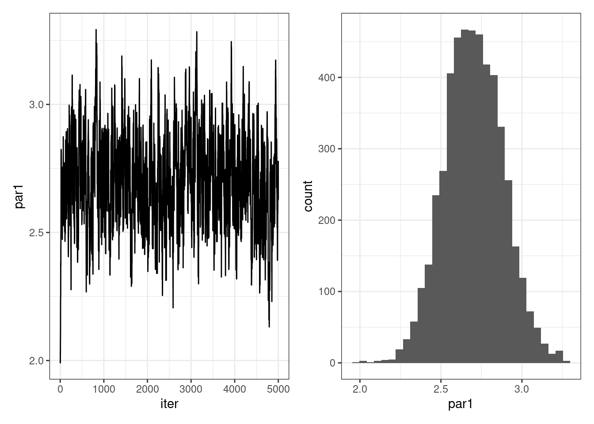
You should notice that the chain starts at 2 before moving to a mean of 3. The starting value of 2 was arbitrary. Since it was far from 3, the proposed new parameter values often resulted in improvements and accepting values that were more likely. As a result the chain moves to the part with a mean of 3 and constant variance (i.e., where the chain has converged). This transition from the starting value to the point where the chain has converged should be discard. We call this the burn-in. Here are the same plots with the burn-in removed
nburn <- 100
d_burn <- tibble(iter = nburn:num_iter,
par1 = pars[nburn:num_iter])
p1 <- ggplot(d_burn, aes(x = iter, y = par1)) +
geom_line()
p2 <- ggplot(d_burn, aes(x = par1)) +
geom_histogram()
p1 | p2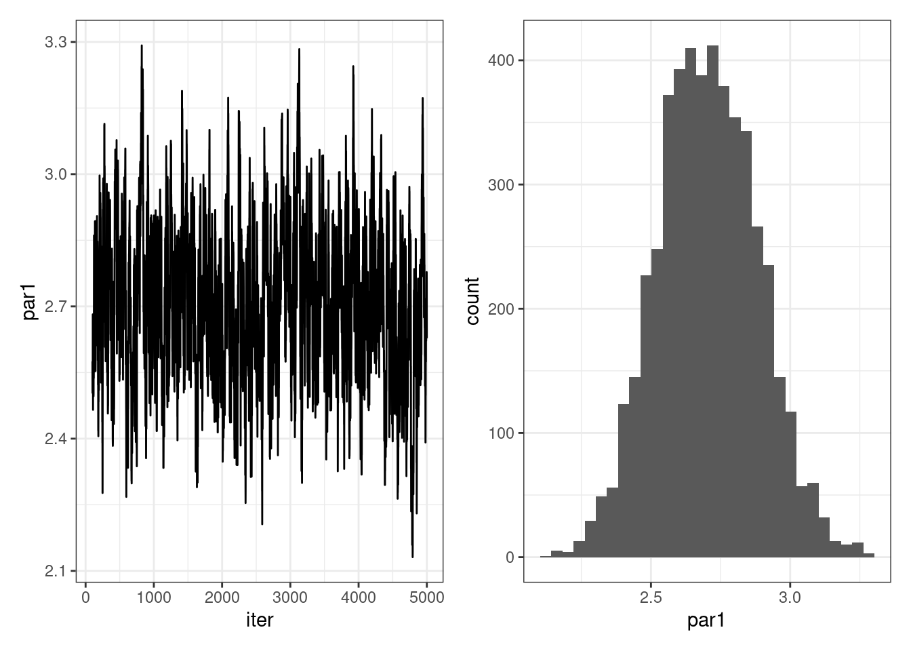
Now your can analyze the chain to explore the posterior distribution
par_post_burn <- pars[nburn:num_iter]
#Mean
mean(par_post_burn)[1] 2.703547#sd
sd(par_post_burn)[1] 0.1801216#Quantiles
quantile(par_post_burn, c(0.025, 0.5,0.975)) 2.5% 50% 97.5%
2.359081 2.700100 3.065872 Finally, you can sample from the posterior distribution just like your would sample from a random variable using the rnorm, rexp, rlnorm, etc. function. The key is to randomly select an iteration (num_sample = 1) or a set of samples (if num_sample > 0) with replacement (replace = TRUE; i.e., a iteration could be randomly selected multiple times).
num_samples <- 100
sample_index <- sample(x = 1:length(par_post_burn), size = num_samples, replace = TRUE)
random_draws <- par_post_burn[sample_index]
hist(random_draws)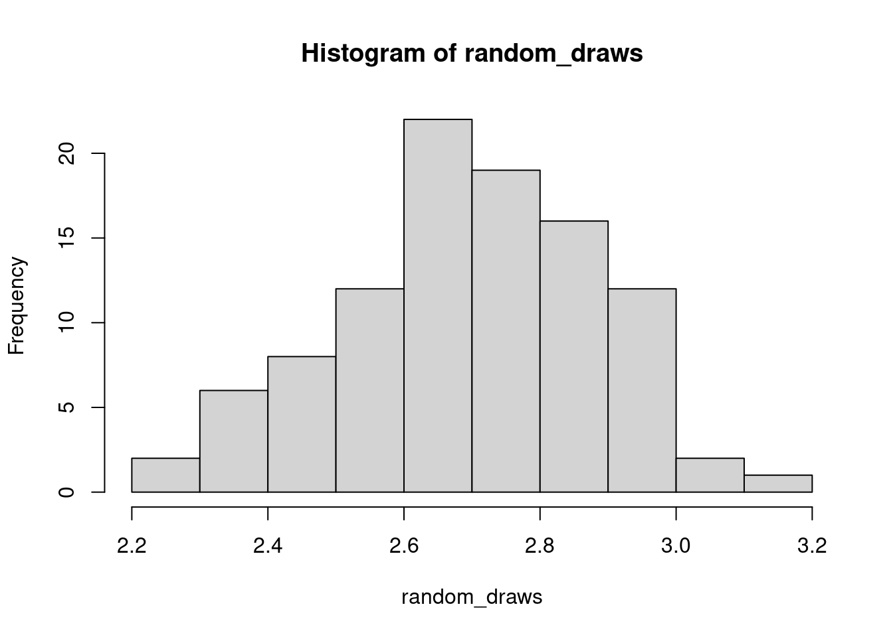
Finally we can use the idea of randomly drawing from the posterior to develop predictions from the posterior. This is just like the Logistic growth module where you randomly sampled from the parameter uncertainty and used the random samples in the logistic equation.
Here we are calculating two things 1) pred_posterior_mean just has uncertainty in the M-M parameter. Think about this as generating uncertainty around the mean prediction at each value of x. 2) y_posterior is the prediction of a observation. Therefore you take the value from #1 and add the uncertainty in the observations from sd_data that was set above. This is your predictive or forecast uncertainty.
Important: If you have multiple parameters your MCMC chain, you randomly draw posterior_sample_indices and use values for all the parameters at that iteration. By doing this you are representing the joint distribution of the parameter - e.g., if parameter 1 is high, parameter 2 is always low. If you select posterior_sample_indices for each parameter, you break the correlations of parameters that the MCMC method estimated and, as a result, overestimate the uncertainty.
num_samples <- 1000
x_new = x
pred_posterior_mean <- matrix(NA, num_samples, length(x_new)) # storage for all simulations
y_posterior <- matrix(NA, num_samples, length(x_new))
for(i in 1:num_samples){
sample_index <- sample(x = 1:length(pars), size = 1, replace = TRUE)
pred_posterior_mean[i, ] <- pars[sample_index] * (x_new / (x_new + par_true[2]))
y_posterior[i, ] <- rnorm(length(x_new), pred_posterior_mean[i, ], sd = sd_data)
}
n.stats.y <- apply(y_posterior, 2, quantile, c(0.025, 0.5, 0.975))
n.stats.y.mean <- apply(y_posterior, 2, mean)
n.stats.mean <- apply(pred_posterior_mean, 2, quantile, c(0.025, 0.5, 0.975))
d <- tibble(x = x_new,
median = n.stats.y.mean,
lower95_y = n.stats.y[1, ],
upper95_y = n.stats.y[3, ],
lower95_mean = n.stats.mean[1, ],
upper95_mean = n.stats.mean[3, ],
obs = y)
ggplot(d, aes(x = x)) +
geom_ribbon(aes(ymin = lower95_y, ymax = upper95_y), fill = "lightblue", alpha = 0.5) +
geom_ribbon(aes(ymin = lower95_mean, ymax = upper95_mean), fill = "pink", alpha = 0.5) +
geom_line(aes(y = median)) +
geom_point(aes(y = obs)) +
labs(y = "M-M Prediction")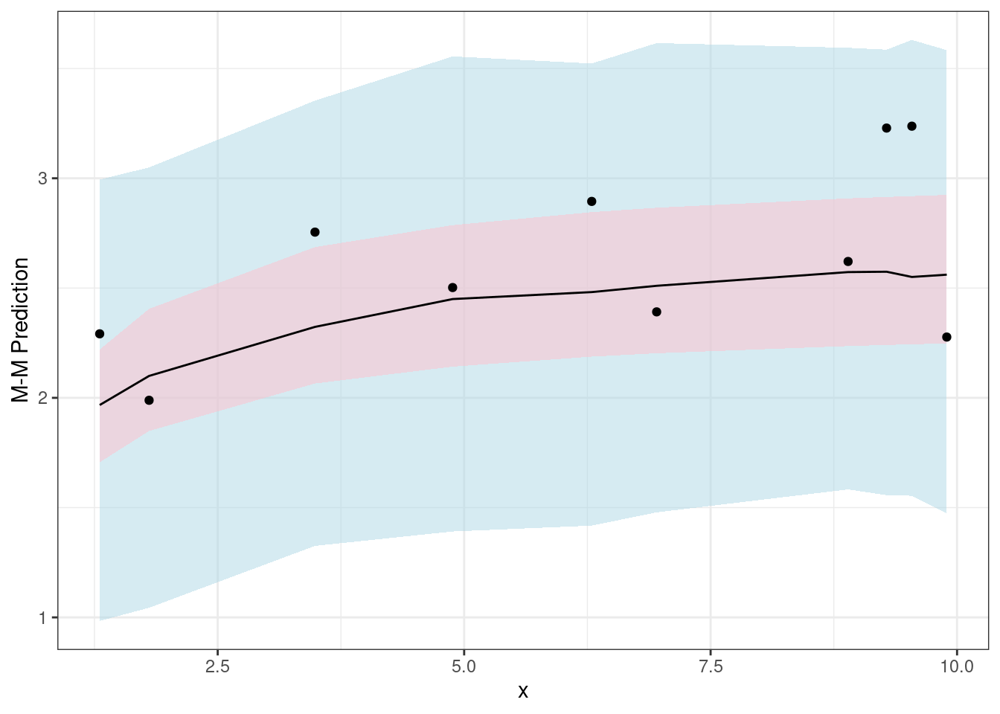
Using the following as a guide
library(tidyverse)
library(patchwork)
#Build fake dataset
set.seed(100)
num_data_points <- 200
sd_data <- 0.25
par_true <- c(3, 0.5)
x <- runif(num_data_points, 0, 10)
y_true <- par_true[1] * (x / (x + par_true[2]))
y <- rnorm(length(y_true), mean = y_true, sd = sd_data)
plot(x, y, ylim = c(0, par_true[1] + 2))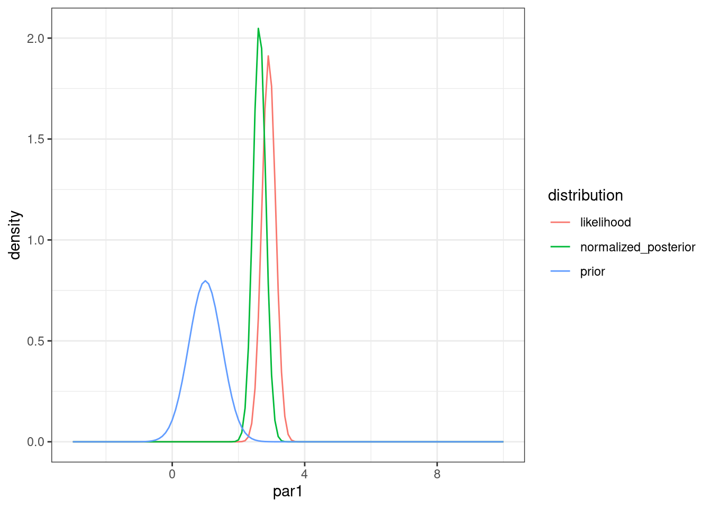
#Set MCMC Configuration
num_iter <- 2000
num_pars <- 2
jump <- c(0.05, 0.05)
#Initialize chain
pars <- array(NA, dim = c(num_pars, num_iter))
pars[1, 1] <- 2
pars[2, 1] <- 1
log_likelihood_prior_current <- -10000000000
for(i in 2:num_iter){
#Loop through parameter value
for(j in 1:num_pars){
#Randomly select new parameter values
proposed_pars <- pars[, i - 1]
proposed_pars[j] <- rnorm(1, mean = pars[j, i - 1], sd = jump[j])
##########################
# PRIORS
#########################
#(remember that you multiply probabilities which mean you can add log(probability))
log_prior <- dunif(proposed_pars[1], min = 0, max = 10, log = TRUE) +
dunif(proposed_pars[2], min = 0, max = 100, log = TRUE)
#Likelihood.
#You could use:
# pred <- process_model(x, pars = proposed_pars)
# log_likelihood <- sum(dnorm(new_data, mean = pred, sd = sd_data, log = TRUE)
# but we are looping here because it transitions well to the next section of the course
log_likelihood <- rep(NA, length(x))
pred <- rep(NA, length(x))
for(m in 1:length(x)){
##########################
# PROCESS MODEL
#########################
pred[m] <- proposed_pars[1] * (x[m] / (x[m] + proposed_pars[2]))
##########################
# DATA MODEL
#########################
log_likelihood[m] <- dnorm(y[m], mean = pred[m], sd = sd_data, log = TRUE)
}
#Remember that you multiply probabilities which mean you can add log(probability)
#Hence the use of sum
log_likelihood <- sum(log_likelihood)
############################
### PRIOR x LIKELIHOOD
############################
#Combine the prior and likelihood
#remember that you multiply probabilities which means you can add log(probability)
log_likelihood_prior_proposed <- log_prior + log_likelihood
#We want the ratio of new / old but since it is in log space we first
#take the difference of the logs: log(new/old) = log(new) - log(old)
# and then take out of log space exp(log(new) - log(old))
z <- exp(log_likelihood_prior_proposed - log_likelihood_prior_current)
#Now pick a random number between 0 and 1
r <- runif(1, min = 0, max = 1)
#If z > r then accept the new parameters
#Note: this will always happen if the new parameters are more likely than
#the old parameters z > 1 means than z is always > r no matter what value of
#r is chosen. However it will accept worse parameter sets (P_new is less
#likely then P_old - i.e., z < 1) in proportion to how much worse it is
#For example: if z = 0.9 and then any random number drawn by runif that is
#less than 0.90 will result in accepting the worse values (i.e., the slightly
#worse values will be accepted a lot of the time). In contrast, if z = 0.01
#(i.e., the new parameters are much much worse), then they can still be accepted
#but much more rarely because random r values of < 0.1 occur more rarely
if(log(z) > log(r)){
pars[j, i] <- proposed_pars[j]
log_likelihood_prior_current <- log_likelihood_prior_proposed
}else{
pars[j, i] <- pars[j, i - 1]
log_likelihood_prior_current <- log_likelihood_prior_current #this calculation isn't necessary but is here to show you the logic
}
}
}d <- tibble(iter = 1:num_iter,
par1 = pars[1, ],
par2 = pars[2, ]) %>%
pivot_longer(-iter, values_to = "value", names_to = "parameter")
p1 <- ggplot(d, aes(x = iter, y = value)) +
geom_line() +
facet_wrap(~parameter, scales = "free")
p2 <- ggplot(d, aes(x = value)) +
geom_histogram() +
facet_wrap(~parameter, scales = "free")
p1 / p2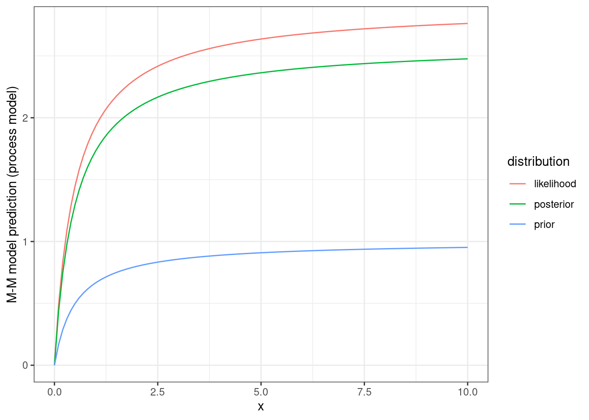
Your task is to modify the code above to estimate the posterior distribution of parameters in Q10 function that was in the likelihood analysis exercise. Use the same data as used in the Q10 likelihood exercise.
Question 1: Provide the distribution and parameters describing the distribution for your prior distributions. Justify why you chose the distribution and parameters. (do not spend time looking at the literature for values to use to build prior distribution - just give plausible priors and say why their plausible)
Answer 1:
Question 2: Provide plots of your prior distributions.
Answer 2:
Question 3: Modify the code above to estimate the posterior distribution of your parameters. Put your modified code below.
Answer 3:
Question 4: Plot the your MCMC chain for all parameters (iteration # will be the x-axis)
Answer 4:
Question 5: Approximately how many iterations did it take your chain to converge to a straight line with constant variation around the line (i.e., a fuzzy caterpillar). This is the burn-in. If your chain did not converge, modify the jump variable for each parameters and/or increase your iterations. You should not need more than 10000 iterations for convergence so running the chain for a long period of time will not fix issues that could be fixed by modifying the jump variable. Also, pay attention to the sd_data parameter. You should estimate it as a parameter or set it to a reasonable value. If it is too small your chain will fail because the probability of the some of parameters that are explored functionally zero.
Answer 5:
Question 6: Remove the iterations between 1 and your burn-in number and plot the histograms for your parameters.
Answer 6:
Question 7: Provide the mean and 95% Credible Intervals for each parameter
Answer 7:
Question 8: Random select 1000 values from the parameters in your posterior distribution. Show the randomly selected values for each parameter as a histogram.
Answer 8:
Question 9: Use the samples from Question 8 to generate posterior predictions of soil respiration at the observed temperature values (i.e., the same temperature data used in your model fit). Provide a plot with temperature on the x-axis and respiration on the y-axis. The plot should have the mean and 95% predictive uncertainty bounds (i.e., include uncertainty in parameters and in the data model)
Answer 9: